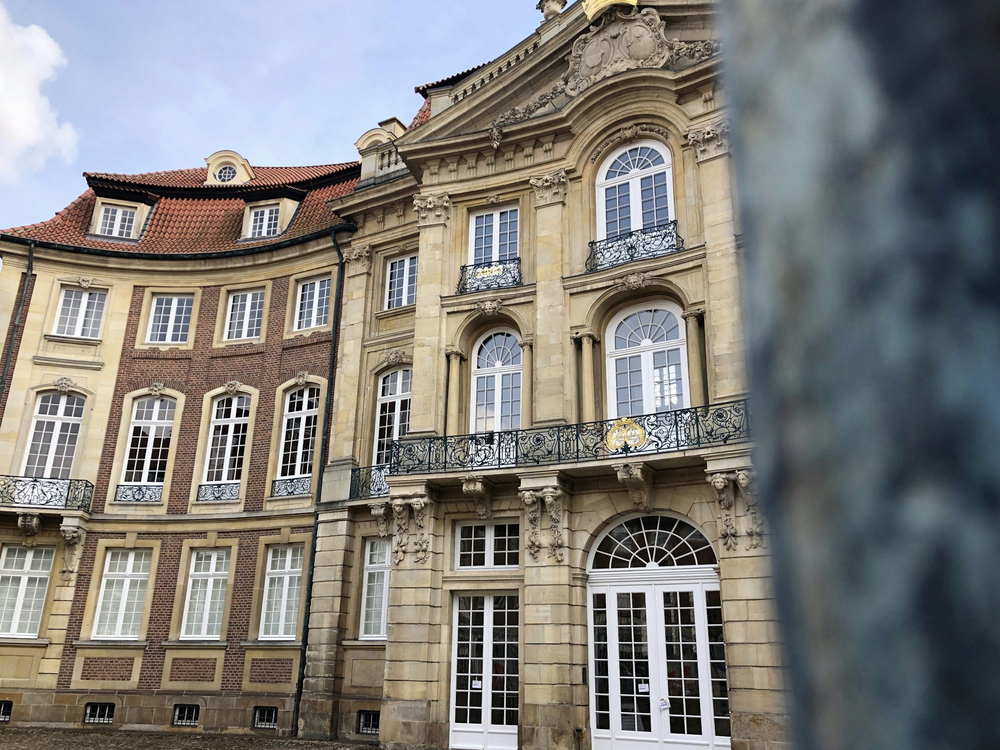

skivaro.shop
This article Literacy Reading Examination Curriculum Knowledge Writing explores the Study significance Certification of Academic multicultural education in Innovation schools, highlighting its benefits Training in promoting understanding, Teaching Skills Learning respect, and Research global citizenship among students.In an increasingly interconnected world, embracing diversity through multicultural education has become essential for fostering understanding and respect among students. Multicultural education is not merely an academic subject; it represents a comprehensive approach that values the diverse backgrounds and perspectives of all students. By incorporating multicultural education into curricula, schools can prepare students to navigate a global society and become informed, responsible citizens. One of the primary benefits of multicultural education is its ability to promote inclusivity. When students learn about various cultures, histories, and perspectives, they develop a greater Certification appreciation for diversity. This awareness helps to break down stereotypes and misconceptions, fostering a classroom environment where all students feel valued and respected. For example, integrating literature from diverse authors allows students to see their own experiences reflected in the curriculum while also exposing them to new viewpoints. This inclusivity enhances students' sense of belonging Literacy and encourages them to express their identities confidently. Furthermore, multicultural education enhances critical thinking skills. Engaging with multiple perspectives challenges students to think critically about their own beliefs and assumptions. This process encourages open-mindedness and the ability to engage in respectful dialogues about complex issues. In a multicultural classroom, students learn to consider various viewpoints, fostering empathy and understanding. For instance, discussing global issues from multiple cultural perspectives allows students to appreciate the complexities of these topics, preparing them to address real-world challenges collaboratively. Another significant aspect of multicultural education is its role in promoting social justice. By examining historical and contemporary issues related to inequality and discrimination, students become more aware of the societal structures that contribute to these challenges. This awareness empowers them to take action and advocate for change. Schools can facilitate discussions on social justice through project-based Learning learning, encouraging students to research and address local issues that matter to them. This hands-on approach not only deepens their understanding but also cultivates a sense of agency. To effectively implement multicultural education, schools should prioritize professional development for educators. Teachers need to be equipped with the knowledge and tools to create inclusive Study learning environments. Training programs can help educators explore their own biases, learn about culturally responsive teaching strategies, and develop curricula that reflect diverse perspectives. By investing in teacher training, schools can ensure that multicultural education is approached thoughtfully and effectively. In addition to teacher training, incorporating diverse voices into the curriculum is vital. Schools should seek to include materials that represent a variety of cultures, ethnicities, Reading and experiences. This includes not only literature but also history, art, and science. When students see themselves represented in the curriculum, they are more likely to engage meaningfully with the content. Furthermore, schools can invite guest speakers from different backgrounds to share their experiences, enriching the learning environment. Knowledge Another effective strategy for promoting multicultural education is through extracurricular activities. Clubs and organizations that celebrate diversity can provide students with opportunities to engage with different cultures outside the classroom. For example, cultural festivals, language clubs, and international exchange programs encourage students to explore and appreciate the richness of global cultures. These experiences foster friendships and connections that transcend cultural boundaries, further enriching the school community. As we move forward, it is essential to recognize the role of technology in enhancing multicultural education. Digital resources can provide access to a wealth of information about different cultures and perspectives. Online platforms allow students to connect with peers from around the world, fostering cross-cultural exchanges and collaborative projects. By utilizing technology, educators can create engaging and interactive lessons that bring multicultural education to life. While the benefits of multicultural education are clear, challenges remain in its implementation. Some educators may feel uncertain about how to approach sensitive topics related to race, culture, and identity. To address this, schools should foster an environment where open discussions are encouraged and supported. Creating safe spaces for dialogue allows students to express their thoughts and feelings, enabling constructive conversations about diversity. Additionally, engaging parents and the community in multicultural education initiatives can strengthen its impact. Schools can organize workshops for parents to learn about the importance of diversity and how to support their children in understanding different cultures. Collaborating with community organizations can also provide additional resources and expertise, enriching the educational experience for students. In conclusion, multicultural education is a powerful tool for promoting understanding, respect, and global citizenship among students. By embracing diversity and incorporating various perspectives into the curriculum, schools can create inclusive learning environments that prepare students for the complexities of the world. The benefits of Curriculum multicultural education extend beyond academic achievement; they foster empathy, critical thinking, and a commitment to social justice. As educators, parents, and communities work together to prioritize multicultural education, we can empower future generations to thrive in an interconnected world, ensuring that all voices are heard and valued.